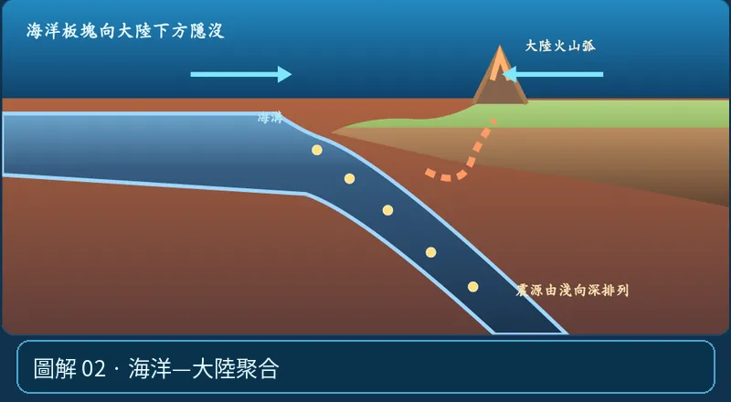

第 05 單元｜圖解 2/8｜課本 p.80–88
海洋—大陸聚合
通常冷卻較久、密度較大的海洋岩石圈隱沒，形成海溝、地震帶及大陸邊緣火山弧；並非只因「海洋地殼顏色深」。
① 看一眼② 操作圖③ 自己推理④ 揭開解答
🔬 這張圖，請自己動手試
操作圖上方的頁籤、滑桿或按鈕；圖片也能左右滑動放大觀看。
互動圖解 · 海洋—大陸聚合

原創 SVG 地科教學模型，方便理解，非真實比例、非即時地震資料；互動無法載入時仍有靜態圖。
STEP 01 · 先觀察
👀 眼睛先找線索
選「洋－陸聚合」，看海溝、向下彎曲的海洋板塊、火山弧與深淺地震位置。
💡 為什麼是這樣？
較冷且負浮力較強的海洋岩石圈隱沒，讓上覆地函楔受水影響產生熔融，於大陸邊緣形成火山弧。
🎯 換個問法想一題
聚合型隱沒帶的岩漿，都是整塊下沉板塊直接融化嗎？
我想好了，點開看答案 ↓
通常不是；水進入上覆地函楔、促進部分熔融非常重要。
⚡ 一句記住：相撞，海洋板塊下沉